디자인패턴 · 1차시
다형성·동적바인딩 워밍업
모든 디자인 패턴이 딛고 서 있는 한 가지 원리부터 확인한다
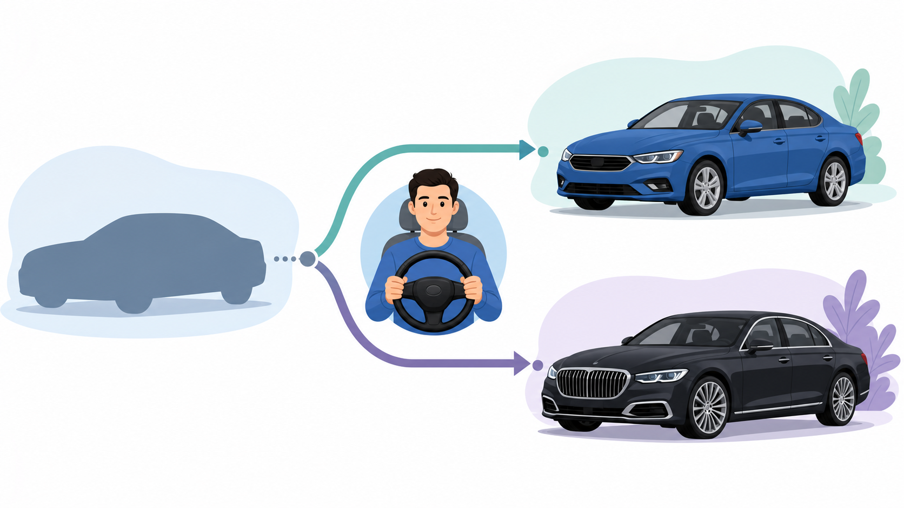
1차시 · 다형성·동적바인딩 워밍업
패턴 책이 어려운 이유는 패턴이 아니라 다형성이다
- 패턴 다이어그램의 화살표 = "추상에 의존"
- 그 원리 = 다형성 + 동적바인딩
- 건너뛰면 패턴은 암기 과목이 된다
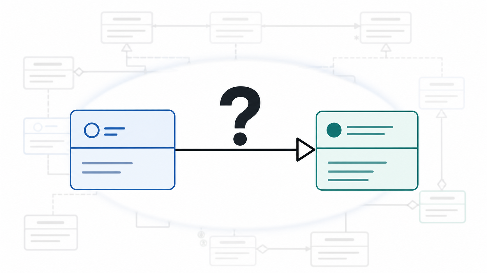
1차시 · 다형성·동적바인딩 워밍업
오늘은 "한 문장"을 코드로 증명한다
- 상위 타입 참조로 하위 객체를 다루는 다형성을 설명한다
- 재정의 메서드가 실행 시점에 선택되는 동적바인딩을 설명한다
- 추상 1개 + 구현 2개로 동적바인딩을 직접 구현한다
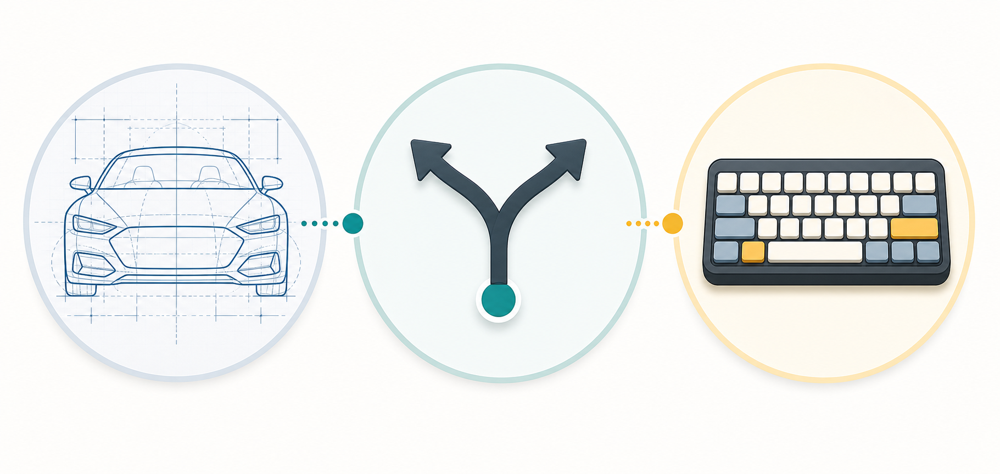
1차시 · 다형성·동적바인딩 워밍업
다형성 = 하나의 타입, 여러 개의 모습
Car s = new Sonata();— 부모 타입에 자식 객체- 변수 타입은 Car, 실제 객체는 Sonata
- "자동차"라 부르지만 소나타가 달린다
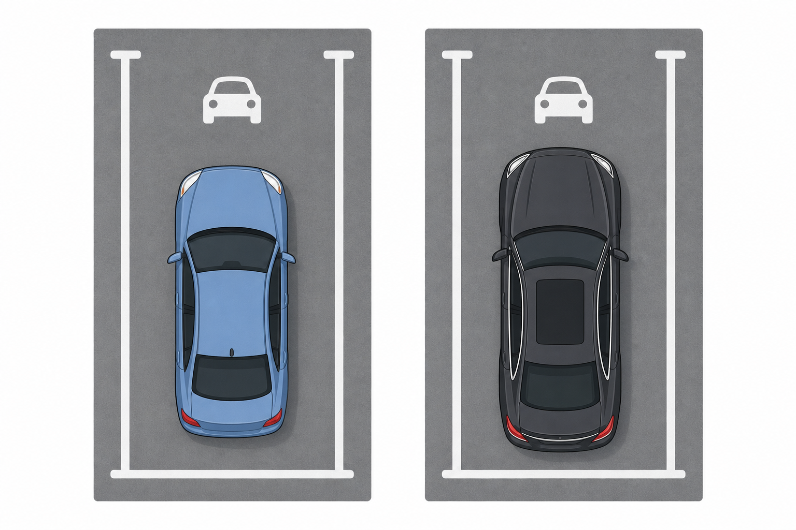
1차시 · 다형성·동적바인딩 워밍업
추상 타입은 약속만, 구현 타입은 내용을
abstract class Car— "run이 있어야 한다"는 약속- Car는
new불가 - Sonata·Genesis가 각자 run을 채운다
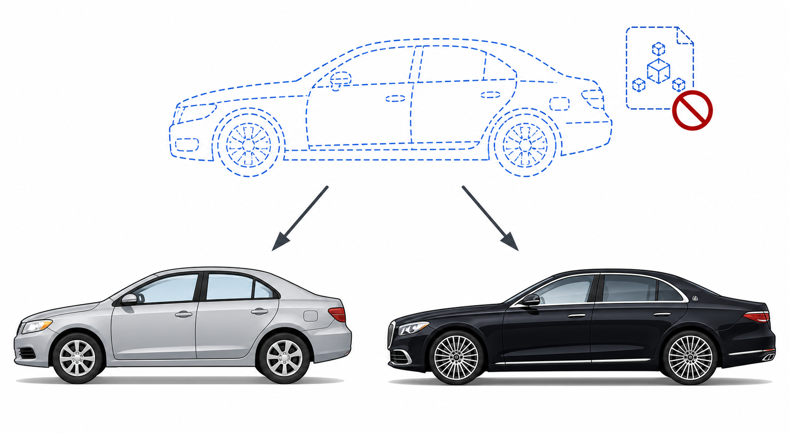
1차시 · 다형성·동적바인딩 워밍업
@Override — 같은 서명, 새로운 내용
- 재정의: 부모 메서드를 같은 서명으로 다시 작성
@Override로 컴파일러가 서명 일치를 검사- 재정의되면 부모 메서드는 그 객체에서 가려진다
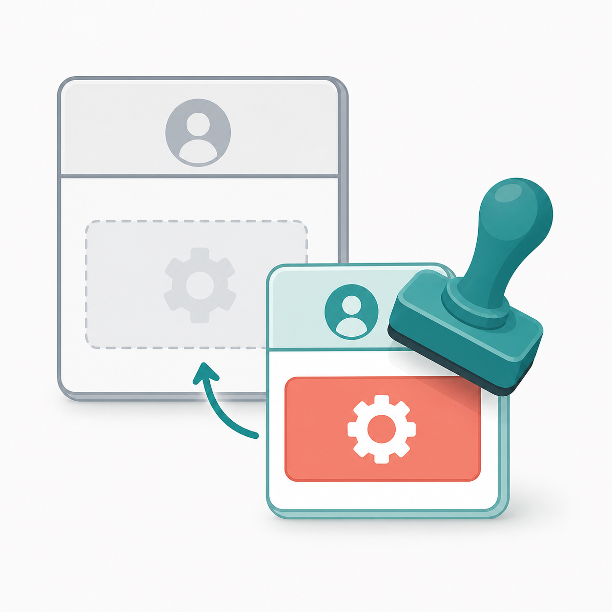
1차시 · 다형성·동적바인딩 워밍업
호출할 메서드는 "실행 시점의 실제 객체"가 결정한다
- 컴파일 시점: Car에 run이 있는지 확인만
- 실행 시점: 실제 객체 Sonata의 run이 선택
- 같은
s.run()이 객체에 따라 다르게 동작
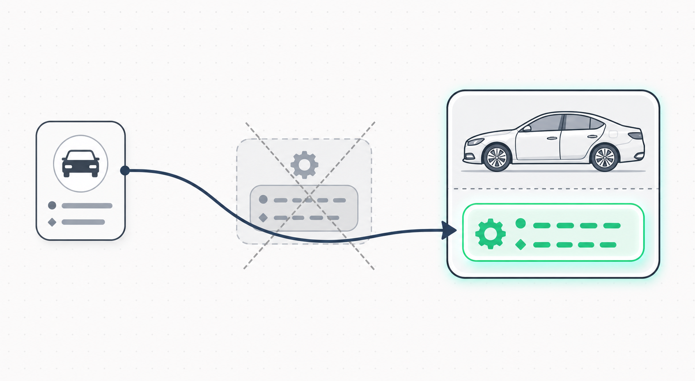
1차시 · 다형성·동적바인딩 워밍업
한눈에 보는 전체 코드: 정의부 + 실행부
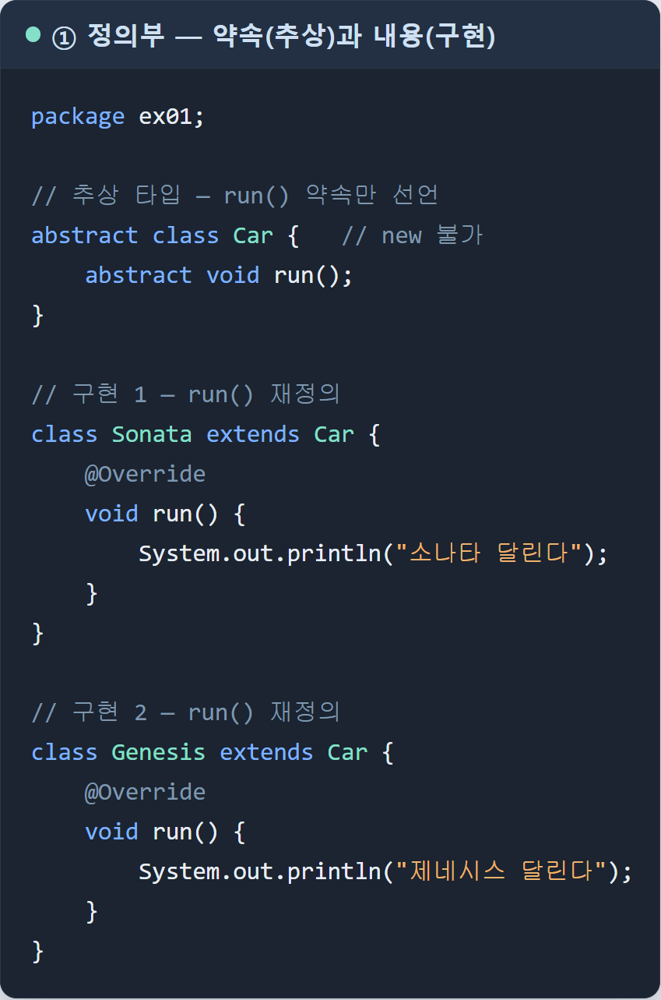
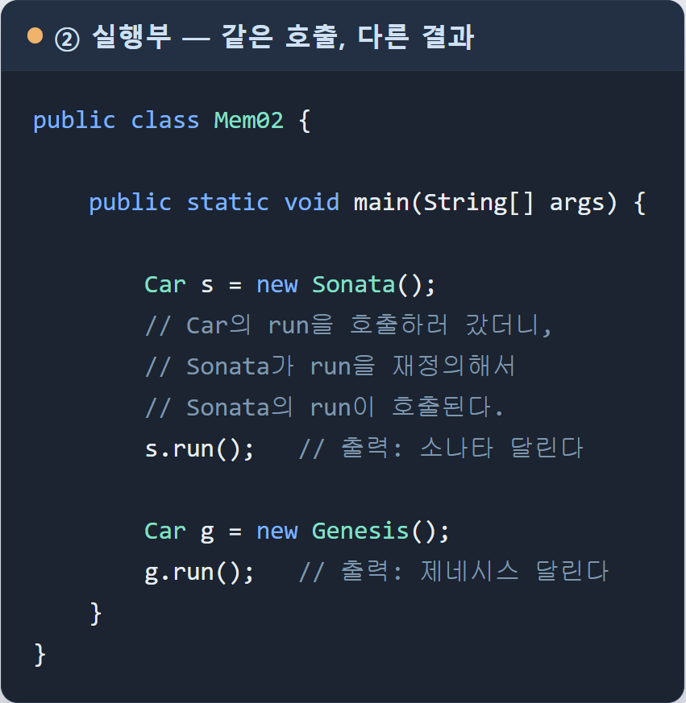
1차시 · 다형성·동적바인딩 워밍업
패턴 = "다형성을 어디에 쓸 것인가"에 대한 검증된 답
- 전략: 갈아 끼울 행위를 추상 타입 뒤에
- 프록시: 같은 추상 타입 뒤에 대리자를
- 옵저버·팩토리·데코레이터도 같은 원리의 응용
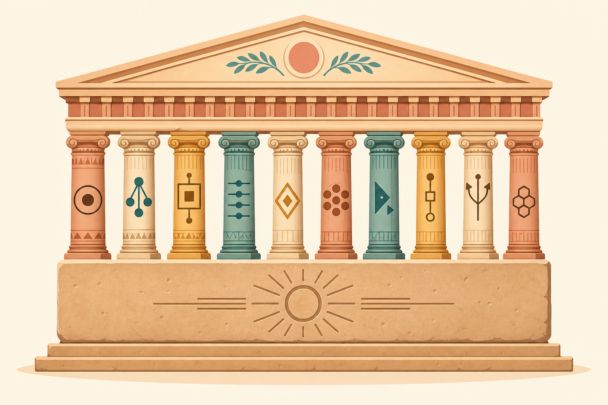
1차시 · 다형성·동적바인딩 워밍업
16차시 전체 지도 — 오늘은 출발선이다
- 오늘 ch01: 다형성·동적바인딩(출발선)
- 전략 → 프록시 → 어댑터 → 싱글톤 …
- "모든 패턴은 다형성 위에 서 있다"
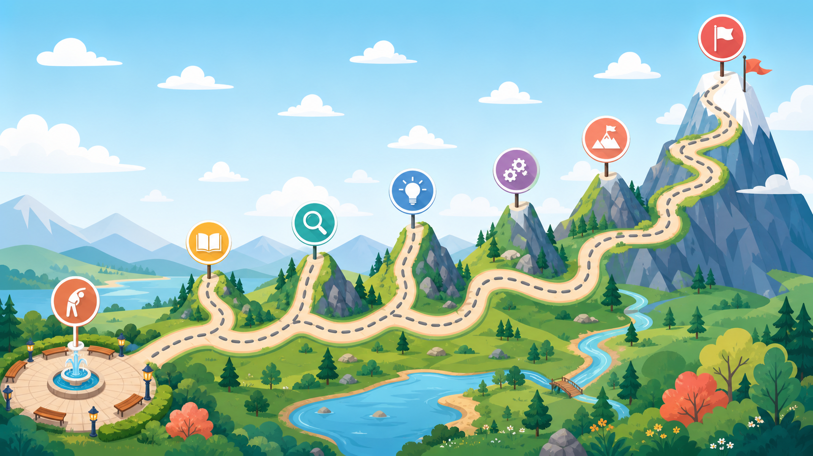
실습 준비
실습 환경 준비 — 여기서부터 직접 합니다
- 설치 1: JDK 21 (LTS)
- 설치 2: VS Code
- 설치 3: Extension Pack for Java
- 확인:
java -version→ 21.x
설치 체크리스트
[ ] JDK 21
[ ] VS Code
[ ] Extension Pack for Java
[ ] java -version 확인
Terminal
$ java -version
openjdk version "21.x" 2024
OpenJDK Runtime Environment
OpenJDK 64-Bit Server VM실습 1
직접 타이핑 → ▶ Run 클릭
src/ex01/Mem02.java작성- main 위 ▶ Run 클릭
- 출력: 소나타 달린다 / 제네시스 달린다
package ex01;
abstract class Car {
abstract void run();
}
class Sonata extends Car {
@Override
void run() { System.out.println("소나타 달린다"); }
}
class Genesis extends Car {
@Override
void run() { System.out.println("제네시스 달린다"); }
}
public class Mem02 {
public static void main(String[] args) {
Car s = new Sonata();
s.run();
Car g = new Genesis();
g.run();
}
}실습 2 · 과제
과제 — 추상 타입 1개 + 구현 타입 2개
- 도메인 자유: Animal←Dog/Cat, Shape←Circle/Rect …
- 위치:
src/ex01/example - 추상 메서드 1개 + 구현 2개가 각자 재정의
- main은 반드시 부모 타입 변수로 호출
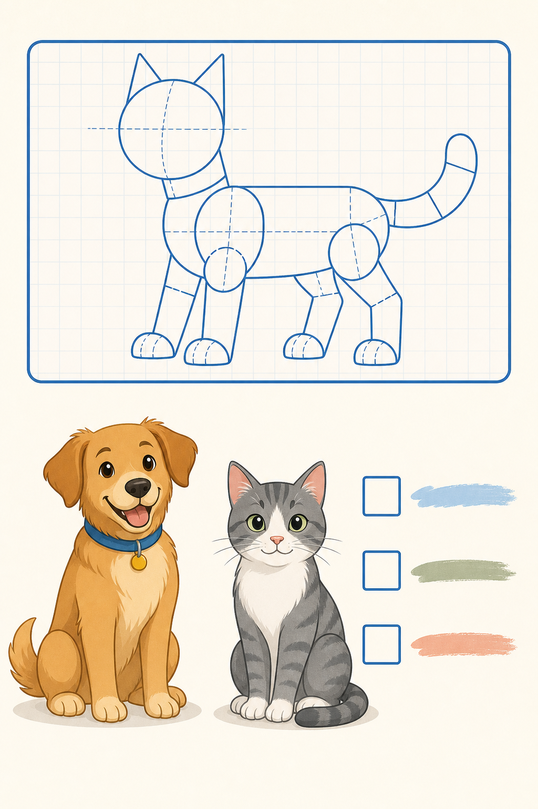
1차시 · 정리
상위 타입으로 다루고, 실행 시점에 선택된다
- 다형성 — 부모 타입 참조에 자식 객체
- 추상 타입 — 약속만,
new불가 - 오버라이드 — 재정의하면 부모는 가려진다
- 동적바인딩 — 실행 시점의 실제 객체가 결정
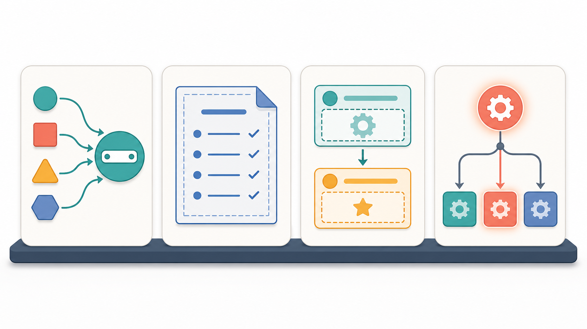
평가하기
평가하기
다음 코드를 실행했을 때 출력과 그 이유로 가장 적절한 것은?
Car s = new Sonata(); s.run();
1. "소나타 달린다" — 실행 시점에 실제 객체 Sonata의 재정의된 run이 선택된다.
2. 컴파일 오류 — 부모 타입 변수에 자식 객체를 담을 수 없다.
3. 아무것도 출력되지 않는다 — 몸통 없는 추상 메서드 run이 호출된다.
4. "소나타 달린다" — 컴파일 시점에 Sonata의 run을 호출하도록 확정된다.
평가하기
평가하기
Java에서 부모(상위) 타입의 참조 변수에 자식(하위) 클래스의 객체를 담을 수 있다.
O
X
평가하기
평가하기
부모 타입 변수로 메서드를 호출하면, 어떤 메서드가 실행될지는 변수의 선언 타입에 따라 컴파일 시점에 최종 결정되므로 항상 부모의 메서드가 실행된다.
O
X
참고자료
참고자료
참고자료
Oracle Java Tutorials – Polymorphism · Overriding · Abstract Classes · Inheritance
Getting Started with Java in VS Code · Extension Pack for Java
Oracle JDK 다운로드
refactoring.guru 디자인패턴 카탈로그
mariofusco/from-gof-to-lambda (GitHub)
GoF 패턴의 2025년 유효성 리뷰 (Medium)
Modern Java Language Features (Java Code Geeks)